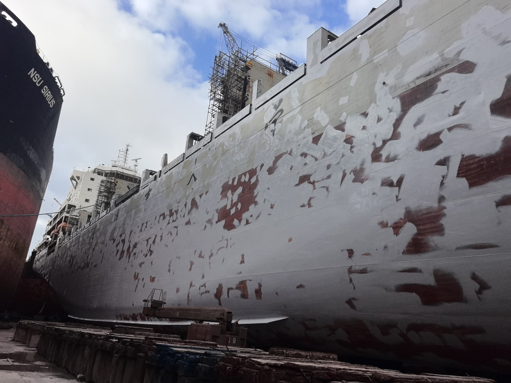
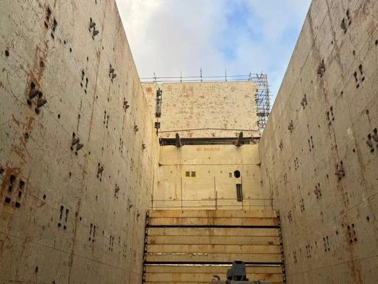
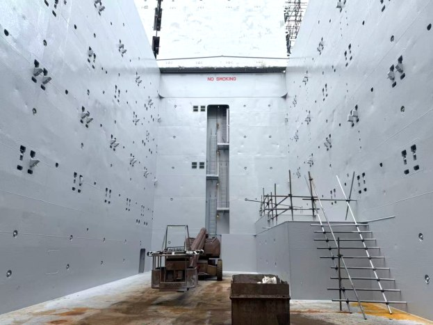
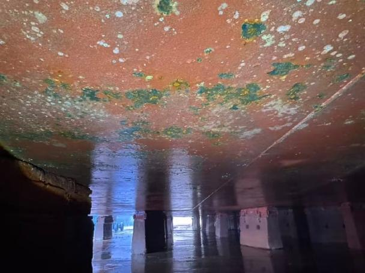
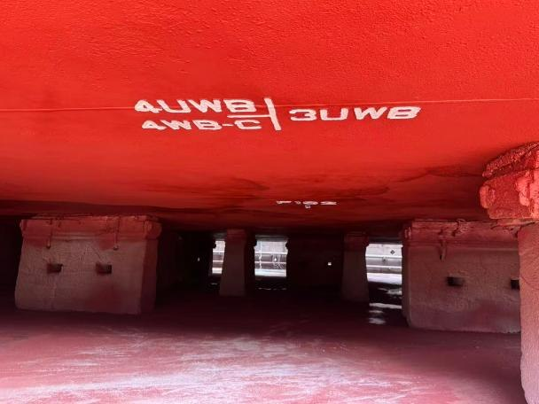
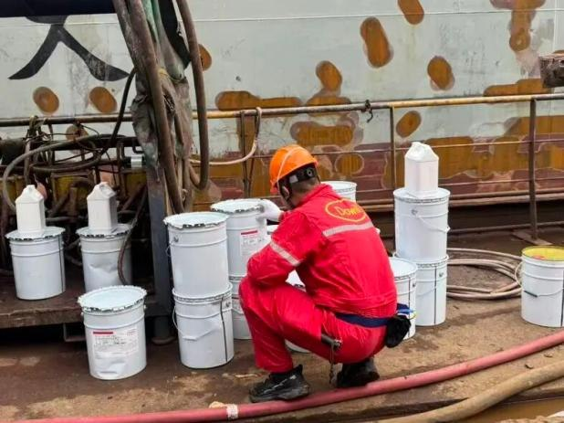

客户案例 / DW G50
育鹏轮坞修项目
船体外壳、水线区域与货舱的无溶剂防护实践。
全部客户案例
大连海事大学远洋教学实习船育鹏轮完成坞修涂装，采用德威 G50 无溶剂船舶涂料，覆盖大面积船体外壳及货舱受限空间。
- 船名
- 育鹏轮
- 所属单位
- 大连海事大学
- 项目类型
- 坞修
- 涂料产品
- DW G50
- 应用区域
- 船体外壳、水线区域及货舱
01
项目需求
育鹏轮兼具教学科研与载货运营功能，不同区域需要防腐与耐磨保护。大面积外壳及货舱受限空间的施工，需要统筹涂装组织和技术支持。
02
涂装方案
项目采用 G50 高固体份无溶剂改性树脂体系进行厚膜施工。德威技术团队驻场协作，为涂装施工与过程控制提供全程支持。
项目图集
从表面处理到涂装完成
项目记录显示，涂装覆盖船体外壳、水线区域及货舱，船舶按计划恢复运营。低溶剂排放和较低气味为现场施工环境带来帮助。
船体外壳


货舱


水下船体



现场技术支持
项目采用 G50 高固体份无溶剂改性树脂体系进行厚膜施工。德威技术团队驻场协作，为涂装施工与过程控制提供全程支持。
项目图片及内容来源：所提供的育鹏轮坞修案例资料。
寻找适合您的涂层方案。
与团队探讨船舶情况、运营工况及下一次项目需求。